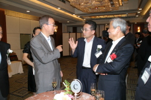
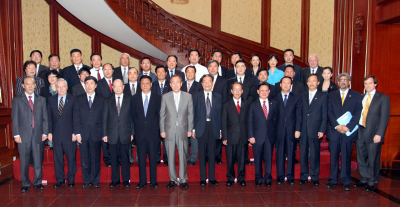

Secretary-General Meets with Business Leaders in Tokyo, Beijing and Seoul
(New York, 4 July 2008) – United Nations Secretary-General Ban Ki-moon has completed a
tour of Global Compact Local Networks in Japan, China and South Korea as part of his official
travels in Asia. The Secretary-General was hosted by business leaders in Tokyo on 29 June, Beijing
on 2 July and Seoul on 4 July. The meetings allowed businesses engaged in local Global Compact
networks to discuss their efforts to advance environmental, social and governance principles with
the Secretary-General.
In all three meetings, the Secretary-General reiterated the critical role that business
plays in achieving United Nations goals. He made an appeal for further action by businesses,
stressing that “ taking steps to address climate change, uphold workforce standards, or achieve
higher levels of corporate accountability is not just about the financial success of companies or
rewards from the market. It is also about building a better future for our children, our
countr[ies] and our planet. It is a call to our humanity.”
Tokyo – 29 June 2008
In Tokyo, the Secretary-General met with approximately 50 business
representatives, as well as several high-ranking officials from the Ministry of Foreign Affairs, on
29 June 2008. Global Compact Japan Network chairman Toshio Arima, Board Director of Fuji Xerox Co.,
welcomed the Secretary-General and reported on recent developments in the network. Additional
remarks were made by: Mr. Masamitsu Sakurai, Chairman of the Board, Ricoh Co., Ltd; Mr. Yuzaburo
Mogi, Chairman and CEO, Kikkoman Corporation; Mr. Yoshiaki Shin, Chairman of the Board, Mitsui
Sumitomo Insurance Group Holdings, Inc; and Mr. Akio Nomura, member of the Global Compact Japan
Board.
In his first official function in Japan as Secretary-General, Ban Ki-moon praised Global
Compact Japan Network members for their recent decision to adopt a CEO-led structure. “The Japan
Network is truly supporting the Global Compact's leadership model – which recognizes that
long-term, active commitment to organizational change must be led by top management. Your model
will be a powerful inspiration for other Local Networks seeking to transition to business-led
structures,” said the Secretary-General.
Read the
Secretary-General’s full
remarks at the Global Compact Event in Tokyo on 29 June 2008.

Secretary-General talks with Global Compact supporters in Japan
Beijing – 2 July 2008
During the Global Compact event in Beijing on 2 July 2008, the
Secretary-General was addressed by numerous representatives of companies and business
confederations on efforts to advance responsible corporate practices, particularly related to
climate change, poverty reduction and disaster relief. Approximately 30 high-level representatives
from business, as well as the Ministry of Foreign Affairs, attended the meeting.
Speeches were delivered by: Wang Zhongyu, President, China Enterprise Confederation; Wang
Maolin President, China International Institute of Multinational Corporations;
and Huang Yuejin, Vice President, China Society for Promotion of GuangCai Program.
Additionally, brief interventions were made by numerous business leaders: Chen Yuan,
President, China Development Bank; Wang Junjin, Chairman, Jun Yao Group Co.; Zhai Ruoyu, General
Manager, China Datang Corporation; Zhang ZhengYu, Chairman, Hi-Tech Wealth Company; Zhou Shouwei,
Deputy General Manager, China National Offshore Oil Corporation; and Zhang Zhongzheng, Chairman,
Befar Group.
In his address, the Secretary-General called on Chinese business leaders engaged in the
Global Compact to continue efforts to embrace responsible practices, particularly related to
climate change. “By investing and planning today for a future that protects our planet, Chinese
business has an opportunity to be a true front-runner,” he stated. “I'm sure Chinese businesses
will not wait for the long and complex intergovernmental agreements to be finalized, but rather
engage pro-actively in China and elsewhere in the world to pave the way for a low-carbon path to
prosperity.”
Read the
Secretary-General’s full
remarks at the Global Compact Event in Beijing on 2 July 2008.

Secretary-General at the Global Compact event in China
Seoul – 4 July 2008
The Global Compact Korea Network convened a luncheon for the
Secretary-General on 4 July 2008, attended by Prime Minister Han Seung-Soo, over 200 business
leaders and other distinguished guests.
Following remarks by Global Compact Korea Network President Nam Seung-Woo and Network
Secretary-General Ju Chul-Ki, the Secretary-General praised the rapid growth of the network which
has attracted nearly 120 companies in less than one year. He encouraged companies to strive for
world-class responsible business practices and expressed his “hope that the Compact can help bring
a new dawn of transparency and good governance to our country’s business sector”.
The Secretary-General also remarked on the success of the recent “Changing Landscapes”
conference co-hosted by the network in June 2008, which was the first meeting of Asian business,
global investors and civil society on such a broad scale.
“You have made an important contribution by giving practical meaning to United Nations
values, and helping to build bridges between countries, based on commerce, trade and investment,”
stated Ban. “ The more investors recognize that business responsibility is about reducing risks and
enhancing benefits, the faster we can move towards market sustainability.”
Read the
Secretary-General’s full
remarks at the Global Compact Event in Seoul on 4 July 2008.
Secretary-General addresses Global Compact Korea Network
Contact
Matthias Stausberg
+ 1 917 367 3423
stausberg@un.org
Carrie Hall
+1 917 367 5232
hallc@un.org